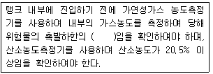
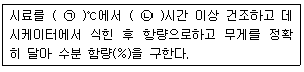
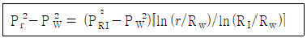
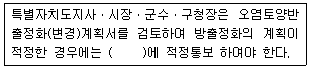

토양환경기사 (2017-03-05 기출문제)
1과목: 토양학개론
1. 다음 중 이온교환효율이 큰 순서로 옳은 것은?
- Li＞Rb＞Na＞K
- K＞Rb＞Li＞Na
- Na＞Li＞K＞Rb
- Rb＞K＞Na＞Li
(정답률: 86%)

2. 유류로 오염된 자유면대수층의 토양시료를 채취하여 분석한 결과 유료공극의 크기가 20μm 라면 모관대의 두께(cm)는? (단, 20℃ 조건)
- 1⑤
- 110
- 135
- 150
(정답률: 46%)
3. 토양에 대한 설명으로 틀린 것은?
- 토양은 고체, 액체, 기체로 구성된 3차원의 공간으로 구성된 흙을 말한다.
- 토양기체는 토양의 공극에 토양수가 차지하고 있지 않은 공간에 있는 토양 공기를 말한다.
- 토양에 존재하는 수분에는 수용성 무기물과 유기물이 녹아 있어 식물의 영양물질이 되며, 이를 지하수라 한다.
- 토양을 구성하고 있는 고체는 풍화된 암석광물인 무기물과 각종 생물체를 포함한 유기물로 구성되어 있다.
(정답률: 87%)
4. 토양구성 입자의 직경 즉 입도분포를 결정하기 위한 분석과 가장 거리가 먼 것은?
- 비중계분석
- 비표면적분석
- 체분석
- 침전분석
(정답률: 77%)
5. 토양이 수분을 보유하는 힘인 토양수분장력을 나타내는 식은? (단, H : 물기둥 높이(cm), P : 압력(mmHg))
- pF = log H
- pF = log (H/P)
- pF = log P
- pF = log (P/H)
(정답률: 84%)
6. DNAPL에 속하는 물질은?
- 연료유
- TCE
- 톨루엔
- 항공유
(정답률: 81%)
7. 토양의 pH가 높은 경우 인산 유효도가 감소되는 원인은?
- calcium phosphate 침전물 형성
- aluminum phosphate 침전물 형성
- sodium phosphate 침전물 형성
- iron phosphate 침전물 형성
(정답률: 62%)
8. 토양 수직단면을 분류하는 성층구조에서 가장 성충에 존재하는 토양층위는?
- A1
- B1
- O1
- C
(정답률: 89%)
9. 유기질(식물조직)로 이루어진 늪지의 토양을 나타내는 토양목(order)은?
- Andosol
- Entisol
- Vertisol
- Histosol
(정답률: 89%)
10. 오염물질의 이동특성 중 이류(advection)에 해당하는 것은?
- 용액의 농도가 불균일할 때 농도가 높은 곳으로부터 낮은 곳으로 물질이 이동하는 것
- 지하수환경으로 유입된 오염물질이 지하수의 공극유속과 같은 속도로 움직이는 것
- 용질이 다공질 매체를 통하여 이동하는 과정에서 희석되는 것
- 용질의 유동이 예상보다 늦어지는 현상
(정답률: 91%)
11. 물로 염분을 세척하는 방법으로 염류토양을 개량하고자 할 때 일어나는 가장 큰 문제는?
- 토양의 급격한 산성화
- 투수력의 급격한 저하
- 염류의 다량 집적
- 유기물의 급격한 분해
(정답률: 70%)
12. 벤젠이 포화토양층에 평형상태로 용해 또는 흡착되어 있다. 지하수와 토양에서의 벤젠농도는 각각 10mg/L, 50mg/kg이며, 포화토양층의 부피는 2500m3이다. 토양공극률이 0.44, 토양입자밀도가 3.50g일 경우 지하수에 용해된 벤젠의 양(kg)은?
- 11
- 22
- 33
- 44
(정답률: 54%)
13. 점토광물 중 비표면적이 가장 작은 것은?
- Montmorillonite
- Kaolinite
- Trioctahedral Vermiculite
- Chlorite
(정답률: 86%)
14. 물에 의한 토양의 침식을 증가시키는데 가장 크게 기여하는 성질은?
- 높은 미사 함량
- 높은 투수성
- 높은 입단발단
- 높은 유기물 함량
(정답률: 60%)
15. 유기수은(CH3Hg)에 대한 설명으로 가장 거리가 먼 것은?
- 금속 상태의 수은보다 생물체 내의 흡수력이 강하다.
- 수중 생물의 농축ㆍ이동을 통해 이타이이타이병을 유발시킨다.
- 중추신경계와 발초신경계를 주소 손상시킨다.
- 생물체 내에 흡수되면 단백질과 결합하여 부식작용을 유발한다.
(정답률: 83%)
16. 6~40cm 깊이의 상층부 토양의 중량수분 함량이 15%, 용적밀도가 1.2g/cm3이고, 40~100cm 깊이의 하층부 토양의 중량수분 함량이 25%, 용적밀도가 1.4g/cm3일 때, 이 토양 10ha에서 1m 깊이까지 함유되어 있는 물의 부피(m3)는?
- 18200
- 28200
- 38200
- 48200
(정답률: 47%)
17. 토양수분의 물리학적 분류에 해당하지 않는 것은?
- 결합수
- 흡습수
- 유효수
- 모세관수
(정답률: 79%)
18. 질산성 질소가 혐기적 조건에서 산소를 잃고 질소 가스로 변하는 작용은?
- 무기화 작용
- 부동화 작용
- 질산화 작용
- 탈질 작용
(정답률: 76%)
19. 공극률(porosity)이 0.3 인 토양의 공극비는?
- 0.34
- 0.43
- 0.52
- 0.61
(정답률: 87%)
20. 토양의 용적비중이 1.2, 입자비중이 2.4일 때, 이 토양의 공극률(%)은?
- 30
- 40
- 50
- 60
(정답률: 93%)
2과목: 토양 및 지하수 오염조사기술
21. 원자흡수분광광도법에 사용되는 불꽃을 만들기 위한 조연성 가스와 가연성 가스의 조합 중 원자의 영역에서 불꽃 자체에 의한 흡수가 적기 때문에 이 파장영역에서 분석선을 갖는 원소의 분석에 적당한 것은?
- 아세틸렌 - 이산화질소
- 프로판 - 공기
- 아세틸렌 - 공기
- 수소 - 공기
(정답률: 60%)
22. 불소의 정량을 위한 시험방법으로 옳은 것은?
- 기체크로마토그래피법
- 자외선/가시선 분광법
- 원자흡수분광광도법
- 유도결합플라스마-원자발광분광법
(정답률: 88%)
23. 실험 총칙의 내용으로 틀린 것은?
- 감압 또는 진공이라 함은 따로 규정이 없는 한 15mmHg 이하를 말한다.
- 가스체에 농도는 표준상태(0℃, 1기압, 상대습도 0%)로 환산하여 표시한다.
- 제반 시험 조작은 따로 규정이 없는 한 실온에서 실시하고 조작 직후 그 결과를 관찰하는 것으로 한다.
- “항량으로 될 때까지 건조한다”라 함은 같은조건에서 1시간 더 건조할 때 전후 무게 g당 0.3mg 이하일 때를 말한다.
(정답률: 77%)
24. TPH 측정에 관한 설명으로 틀린 것은?
- 유효 측정농도는 10 mg/kg 이상으로 한다.
- 기체크로마토그래피법에 의해 분석한다.
- 메틸알코올을 사용하여 추출한다.
- 노말알칸(C8~C40) 표준물질의 총 면적과 피크의 총면적을 비교하여 정량한다.
(정답률: 62%)
25. 기체크로마토그래피로 유기인화합물을 측정할 때 사용되는 정제용 칼럼으로 가장 거리가 먼 것은?
- 실리카겔 칼럼
- 플로리실 칼럼
- 활성탄 칼럼
- 폴리아미드 칼럼
(정답률: 84%)
26. 이온 전극법을 이용하여 측정하기에 가장 적합한 항목은?
- 불소
- 아연
- 트리클로로에틸렌
- 폴리클로리네이티드비페닐
(정답률: 87%)
27. 저장물질이 없는 누출검사대상시설에 대하여 비파괴 검사를 실시할 때 주의 사항으로 ( )에 옳은 내용은?

- 2분의 1 이하
- 4분의 1 이하
- 8분의 1 이하
- 10분의 1 이하
(정답률: 74%)
28. 원자흡수분광광도법을 이용하여 카드뮴을 분석할 때의 내용으로 가장 거리가 먼 것은?
- 측정 파장은 228.8nm 이다.
- 시안화칼륨이 존재하는 알칼리에서 디티존과 반응시킨다.
- 유효 측정농도는 0.002μg/g이상으로 한다.
- 시료 중에 알칼리금속의 할로겐 화합물이 다량 함유된 경우에는 분자흡수나 광산란에 의하여 오차가 발생한다.
(정답률: 40%)
29. 유도결합플라스마-원자발광분광법(ICP)과 원자흡수분광도법(AAS)에 대한 설명이 맞는 것은?
- AAS : 아르곤가스 사용
- ICP : 불꽃원자화 장치와 장치와 비불꽃원자화장치로 대별
- AAS : 수은, 비소는 환원기화법으로 측정
- ICP : 4000~6000K의 온도 사용
(정답률: 47%)
30. 니켈의 함량을 측정하고자 할 때 검량선에서 얻어진 니켈의 농도가 5.5mg/L이었다면 토양 중 니켈의 함량(mg/kg)은? (단,수분 보정한 토양시료의 무게 3g, 시료용기의 부피 0.1L, 바탕시험용액의 니켈 농도 0.3mg/L, 최종증류액 500mL)
- 약 183.3
- 약 175.5
- 약 173.3
- 약 193.3
(정답률: 42%)
31. 토양환경평가를 수행한 결과 오염면적이 40000m2인 것으로 나타났으며, 오염깊이는 1심도부터 3심도까지인 것으로 조사되었다. 이 지역의 오염토양량(m3)은?
- 40000
- 50000
- 60000
- 80000
(정답률: 63%)
32. 6가 크롬(자외선/가시선 분광법)측정에 관한 설명으로 옳은 것은?
- 청색의 착화합물의 흡광도를 460nm에서 측정
- 청색의 착화합물의 흡광도를 540nm에서 측정
- 적자색의 착화합물의 흡광도를 460nm에서 측정
- 적자색의 착화합물의 흡광도를 540nm에서 측정
(정답률: 86%)
33. 원자흡수분광광도법을 사용한 아연 분석 시 정확도 범위로 옳은 것은?
- 25%~75%
- 70%~130%
- 상대표준편차가 15%~25%
- 상대표준편차가 25%~30%
(정답률: 87%)
34. 저장물질이 없는 누출검사대상시설-가압시험법에서 ‘안정된 시험압력’이라 함은 가압 후 유지시간동안 압력강하가 시험압력의 몇 % 이하인 압력을 말하는가?
- 5%
- 10%
- 15%
- 20%
(정답률: 77%)
35. 토양시료조제방법이 다른 중금속은?
- 아연
- 카드뮴
- 구리
- 납
(정답률: 54%)
36. 수분함량 측정에 대한 설명 중 ( )에 알맞은 내용은?

- ㉠150~155, ㉡8
- ㉠150~155, ㉡4
- ㉠1⑤~110, ㉡8
- ㉠1⑤~110, ㉡4
(정답률: 88%)
37. 저장물질이 있는 누출검사대상시설의 기상부 시험 시 주의사항으로 틀린 것은?
- 기상변화가 심할 때는 시험을 실시하지 않음
- 미감압시험의 경우, 저장물질이 30℃에서 점도 450cSt 이상인 물질인 경우에 적용함
- 가압장치는 300 mmH2O 이상의 압력이 가해지지 않도록 안전장치를 설치함
- 시험기간 동안 진동 등 압력변화에 영향을 주는 경우가 없도록 하며, 시험 중 항상 압력을 관찰하도록 함
(정답률: 76%)
38. 토양오염도를 측정하기 위한 시료의 조제 시 눈금간격 0.075mm의 표준체(200메쉬)로 체거름히야 하는 시료는?
- 비소
- 카드뮴
- 니켈
- 불소
(정답률: 79%)
39. 유기인화합물을 기체크로마토그래피로 측정할 때 정밀도(% RSD) 기준으로 옳은 것은? (단, 정도보증/정도관리에 따라 산정)
- 정밀도는 측정값의 상대표준편차로 산출하며 그 값이 5% 이내이어야 한다.
- 정밀도는 측정값의 상대표준편차로 산출하며 그 값이 10% 이내이어야 한다.
- 정밀도는 측정값의 상대표준편차로 산출하며 그 값이 20% 이내이어야 한다.
- 정밀도는 측정값의 상대표준편차로 산출하며 그 값이 30% 이내이어야 한다.
(정답률: 75%)
40. 유도결합플라스마-원자발광분광법에서 내부표준 원소로 사용하는 물질로 적합한 것은?
- 이트리움
- 란타늄
- 스트론튬
- 세슘
(정답률: 70%)
3과목: 토양 및 지하수 오염정화 기술
41. 오염지하수를 반응벽체로 처리하고자 한다. 반응벽체 내 공극률은 0.5로 결정되었다. 지하수의 Darcy속도가 3m/day이고, 오염지하수의 반응벽체 내 체류 시간을 8시간으로 설계할 경우 반응벽체의 두께(m)는?
- 2.0
- 2.2
- 2.4
- 2.6
(정답률: 64%)
42. 오염토양의 생물통기법 적용가능성을 판단하기 위해 실시하는 호흡률 측정방법에 대한 설명으로 틀린 것은?
- 미생물호흡률 측정은 일반적으로 50시간 정도 실시한다.
- 호흡률 측정 결과가 1%day 이하인 경우에 적용성이 우수한 것으로 판단한다.
- 호흡률 측정은 초기에는 2시간 간격으로 실시하고 점차 간격을 늘려 간다.
- 산소농도가 5% 미만이거나 더 이상 감소되지 않을 때까지 실시한다.
(정답률: 76%)
43. 식물정화법의 장점이라 볼 수 없는 것은?
- 비용이 적게 든다.
- 다양한 오염물질에 적용 가능하다.
- 다른 방법에 비해 효과가 빠르다.
- 넓은 부지의 오염지역에 적용이 가능하다.
(정답률: 81%)
44. 생물통기법 등 생물학적 정화공법 적용을 위해 산소소모량을 산정할 때 수행하는 실험방법은?
- 순간수위변화시험
- 생분해도 실험
- 현장 호흡률 시험
- 양수실험
(정답률: 67%)
45. 반응속도 및 반응기에 대한 설명으로 틀린 것은?
- 반응차수가 0이 된다면 반응속도는 농도와 무관하다.
- 반응차수가 1이 된다면 반응속도는 농도와 비례하게 된다.
- 0차 반응속도상수 단위는 농도/시간이다.
- 완전혼합반응기가 관류형반응기보다 처리소요시간이 짧다.
(정답률: 66%)
46. 토양증기추출에 관한 설명으로 옳은 것은?
- 오염물질의 잔존 독성이 없음
- 지반구조와 상관없이 총 처리시간 예측이 용이함
- 추출된 기체의 후처리가 필요함
- 증기압이 낮은 오염물의 제거효율이 높음
(정답률: 55%)
47. 군 사격장으로 사용하던 지역이 TNT와 RDX로 오염되었다. 식물정화법을 적용하여 정화하고자 할 때 분해에 관여하는 효소는?
- Dehalogenase
- Peroxidase
- Nitroreductase
- Nitrilase
(정답률: 74%)
48. 오염토양을 열처리하여 복원하는 대표적인 열탈착 장치의 종류가 아닌 것은?
- 열스크루 탈착장치
- 로터리 탈착장치
- 세정식 탈착장치
- 유동상 탈착장치
(정답률: 80%)
49. 실험실에서의 예비실험 결과 독성물질의 1차반응 분해 상수가 0.03day-1임을 알았다. 이 물질의 반감기와 가장 가까운 것은? (단, 자연지수 기준)
- 약 23일
- 약 26일
- 약 28일
- 약 30일
(정답률: 69%)
50. 미생물의 종류별 탄소원과 에너지원의 연결로 틀린 것은? (단, 탄소원 - 에너지원)
- 화학합성 자가영양 : CO2 - 유기물의 산화환원반응
- 화학합성 종속영양 : 유기탄소 - 유기물의 산화환원반응
- 광합성 종속영양 : 유기탄소 - 빛
- 광합성 자가영양 : CO2 - 빛
(정답률: 80%)
51. 식물정화법(phytoremediation) 대상 오염물질 중에서 식물에 의한 안정화에 의하여 영향을 받는 물질이 아닌 것은?
- 유기인화합물
- 중금속
- 방향족 탄화수소
- 할로겐화 방향족 탄화수소
(정답률: 68%)
52. 기름의 입경 0.2mm, 기름의 비중 0.94g/cm3, 물의 비중 1g/cm3, 물의 점성도 0.01g/cmㆍsec일 때 기름의 부상속도(cm/min)는? (단, Stokes 법칙 이용)
- 5.84
- 6.84
- 7.84
- 8.84
(정답률: 55%)
53. 토양증기추출정(Soil Venting Well)으로부터 10m 거리(r)에 떨어진 관측정의 압력(Pr)을 측정하여 영향 반경(R1) 거리(m)를 계산하면? (단, 추출정 압력 Pw=0.9atm, Pr=0.95atm, 영향반경 지점의 압력 PRI=0.999atm, 추출정 반경 Rw=50mm)

- 32.8
- 34.3
- 37.6
- 38.7
(정답률: 35%)
54. 반응성 투수벽체내 반응에 관한 설명으로 틀린 것은?
- 영가철은 2가철로 환원되면서 염소계화합물의 탈염소반응을 일으킨다.
- 6가크롬은 전자를 받아 3가크롬의 침전물을 형성한다.
- perchlorate는 영가철로서 처리할 수 없다.
- 톨루엔은 영가철로서 처리할 수 있다.
(정답률: 49%)
55. 토양 내 오염물질의 농도가 5mg/kg이었으며 이와 평형상태인 지하수 오염농도는 2mg/L이었다. 이 지역 오염물질의 양(mg/m3)은? (단, 토양단위용적밀도 = 1.6kg/L, 수분 부피비 = 0.5, 기타 조건은 고려하지 않음)
- 6000
- 7000
- 8000
- 9000
(정답률: 46%)
56. 토양경작법의 장ㆍ단점에 대한 설명으로 틀린 것은?
- 설계와 운영이 용이하다.
- 오염물의 저감에 한계가 있다.
- 처리부저가 대규모로 필요하다.
- 생물학적 처리공법으로 2차오염이 없다.
(정답률: 85%)
57. 수직차단벽인 키드인 슬러리 월(keyed-in siurry wall)의 수평적 도식형태 중 부분봉쇄(partial barricr, 상방향(up-gradient))에 대한 설명으로 틀린 것은?
- 오염부지로부터의 직접적 침출액 발생을 조절하는데 효과적이다.
- 지하수 흐름 방향의 정확한 예측이 요구된다.
- 오염물 주위로 지하수 흐름의 부분적 우회(동수경사가 대체로 높은 지역)가 가능하다.
- 전체봉합방법보다 비용이 저렴하다.
(정답률: 68%)
58. 토양증기추출법(SCE : Soil Vapor Extraction)의 장ㆍ단점으로 틀린 것은?
- 투과성이 낮은 토양에서는 효과가 적다.
- 짧은 시간에 설치할 수 있다.
- 지반구조의 복잡성으로 총 처리시간을 예측하기 어렵다.
- 추출된 기체 처리를 위한 대기오염발지 시설이 필요 없다.
(정답률: 82%)
59. 토양에 포함된 점토광물 중에서 규산염광물에 해당되지 않는 것은?
- 일라이트
- 몬모릴로나이트
- 카올리나이트
- 보오크사이트
(정답률: 91%)
60. 휘발유로 오염된 토양의 초기 TPH 농도가 4000 ppm이었고, 50일 후 2500ppm으로 저감되었다. 오염농도는 1차 반응의 자연저감에 의한 것일 때, 초기 농도가 100 ppm까지 저감되는데 소요되는 기간(day)은?
- 약 183
- 약 248
- 약 393
- 약 443
(정답률: 57%)
4과목: 토양 및 지하수 환경관계법규
61. 국토교통부장관이 지하수의 체계적인 개발ㆍ이용 및 효율적인 보전ㆍ관리를 위하여 수립하는 지하수관리기본계획의 주기는?
- 3년
- 5년
- 10년
- 15년
(정답률: 80%)
62. 오염토양의 반출절차 및 방법에 관한 내용으로 ( )에 옳은 것은?

- 7일 이내
- 10일 이내
- 15일 이내
- 30일 이내
(정답률: 36%)
63. 시ㆍ도지사가 오염 원인자에게 토양정밀조사를 받을 것을 명할 때에는 토양오염지역의 범위등을 감안하여 얼마의 기간 범위 안에서 이행기간을 정하여야 하는가? (단, 연장 기간은 고려하지 않음)
- 30일의 범위 안
- 60일의 범위 안
- 3월의 범위 안
- 6월의 범위 안
(정답률: 83%)
64. 오염토양을 정화하는 자는 오염토양에 다른토양을 섞어서 오염농도를 낮추는 행위를 하여서는 아니된다. 이를 위반하여 오염토양에 다른 토양을 섞어서 오염농도를 낮춘 자에 대한 벌칙 기준은?
- 3년이하의 징역 또는 3천만원 이하의 벌금
- 2년이하의 징역 또는 2천만원 이하의 벌금
- 1년이하의 징역 또는 1천만원 이하의 벌금
- 300만원 이하의 과태료
(정답률: 69%)
65. 토양오염조사기관의 업무가 아닌 것은?
- 토양정밀조사
- 토양정화의 검증
- 토양오염도검사
- 오염유발시설 누출검사
(정답률: 66%)
66. 시ㆍ도지사가 실시하는 오염토양개선사업에 해당되지 않는 것은?
- 객토 및 토양개량제의 사용 등 농토배양사업
- 오염된 수로의 준설사업
- 오염토양 부지의 정지사업
- 오염토양의 위생매립사업
(정답률: 70%)
67. 토양보전대책지역 지정표지판에 관한 내용으로 틀린 것은?
- 표지판의 규격은 가로 3미터, 세로 2미터, 높이 1.5미터 이상으로 하여야 한다.
- 청색바탕에 황색글씨로 제작하며 지워지지 아니하도록 하여야 한다.
- 표지판은 사방에서 잘 보이는 곳에 견고하게 설치하여야 한다.
- 약도는 표지판 설치 위치에서 방향 및 지점등을 누구나 알 수 있도록 작성하여야 한다.
(정답률: 90%)
68. 토양관련전문기관 및 토양정화업 기술인력 교육계획을 수립하여 환경부장관에게 제출하여야 하는 자는?
- 국립환경과학원장
- 국립환경인력개발원장
- 시ㆍ도보건환경연구원장
- 환경보전협회장
(정답률: 78%)
69. 토양정화업자의 준수사항으로 틀린 것은? (문제 오류로 실제 시험에서는 2, 4번이 정답처리 되었습니다. 여기서는 2번을 누르면 정답 처리 됩니다.)
- 토양정화업자는 매년 1월 31일까지 전년도의 토양정화실적을 시ㆍ도지사에게 보고하여야 한다.
- 정화현장에 오염토양의 정화공정도 및 정화일지를 작성하여 비치하고, 정화일지는 3년간 보관하여야 한다.
- 토양관리전문기관의 정화검증을 위한 정화현장 방문, 시료의 채취 등 검증업무수행을 방해해서는 아니된다.
- 반입토양 보관시설에 울타리를 설치하여 반입토양의 유실을 방지하여야 한다.
(정답률: 75%)
70. 지하수 개발 및 이용의 종료신고 시, 시장ㆍ군수 구청장에게 첨부하여 제출해야 하는 서류로 적합한 것은?
- 원상복구계획서
- 굴착행위(변경)신고증
- 지하수영향조사서
- 지하수의 관측 및 조사자료
(정답률: 70%)
71. 지하수 오염방지시설로서 밀폐식이 아닌 상부보호공을 설치하는 경우 상단부의 높이는 지표면보다 최소 얼마 이상 높게 설치되어야 하는가?
- 10cm
- 20cm
- 30cm
- 40cm
(정답률: 84%)
72. 특정토양오염관리대상시설의 종류에 해당하지 않는 것은?
- 특정토양오염물질 제조 및 저장시설
- 석유류의 제조 및 저장시설
- 유해화학물질의 제조 및 저장시설
- 송유관시설
(정답률: 52%)
73. 토양오염우려기준의 오염지역을 1지역, 2지역, 3지역으로 구분하는데, 2지역에 해당되지 않는 것은?
- 도로용지
- 유원지
- 종교용지
- 창고용지
(정답률: 59%)
74. 석유류의 제조 및 저장시설 중 BTEX 항목만을 검사할 수 있는 시설은?
- 나프타 저장시설
- 원유 저장시설
- 등유 저장시설
- 윤활유 저장시설
(정답률: 60%)
75. 특정토양오염관리대상시설의 변경신고 사유가 아닌 것은?
- 특정토양오염관리대상시설을 교체하거나 토양오염방지시설을 변경하는 경우
- 특정토양오염관리대상시설의 사용을 종료하거나 폐쇄하는 경우
- 사업장의 위치 또는 사업자가 변경되는 경우
- 특정토양오염관리대상시설에 저장하는 오염물질을 변경하는 경우
(정답률: 78%)
76. 특정토양오염관리대상시설을 설치한 후 10년이 경과하는 때에는 몇 개월 이내에 토양관련전문기관으로부터 누출검사를 받아야 하는가?
- 1개월
- 3개월
- 6개월
- 9개월
(정답률: 65%)
77. 토양환경보전법상 용어의 정의로 틀린 것은?
- “토양오염”이란 사업활동이나 그 밖의 사람의 활동에 의하여 토양이 오염되는 것으로서 사람의 건강ㆍ재산이나 환경에 피해를 주는 상태를 말한다.
- “토양오염물질”이란 토양오염의 원인이 되는 물질로서 환경부령이 정하는 것을 말한다.
- “토양오염관리대상시설”이란 토양오염물질의 생산ㆍ운반ㆍ저장ㆍ취급ㆍ가공 또는 처리 등으로 토양을 오염시킬 우려가 있는 시설ㆍ장치ㆍ건물ㆍ구축물 및 그 밖에 환경부령으로 정하는 것을 말한다.
- “특정토양오염유발대상시설”이란 특정토양 오염물질의 누출로 인한 토양오염의 우려가 현저한 시설로서 환경부령이 정하는 것을 말한다.
(정답률: 66%)
78. 카드뮴을 토양오염우려기준(단위 : mg/kg)은?
- 20
- 40
- 60
- 120
(정답률: 48%)
79. 토양환경평가를 위한 조사 중 시료의 채취 및 분석을 통해 토양오염의 정도와 범위를 조사하는 것은?
- 개황조사
- 정밀조사
- 기초조사
- 전문조사
(정답률: 84%)
80. 환경부장관이 고시하는 측정망설치계획에 포함되어야 하는 사항으로 가장 거리가 먼 것은?
- 측정말 배치도
- 측정지점의 위치 및 면적
- 측정항목 및 방법
- 측정말 설치시기
(정답률: 77%)